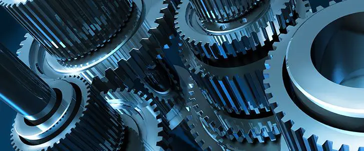
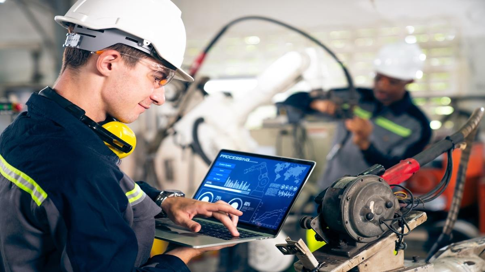
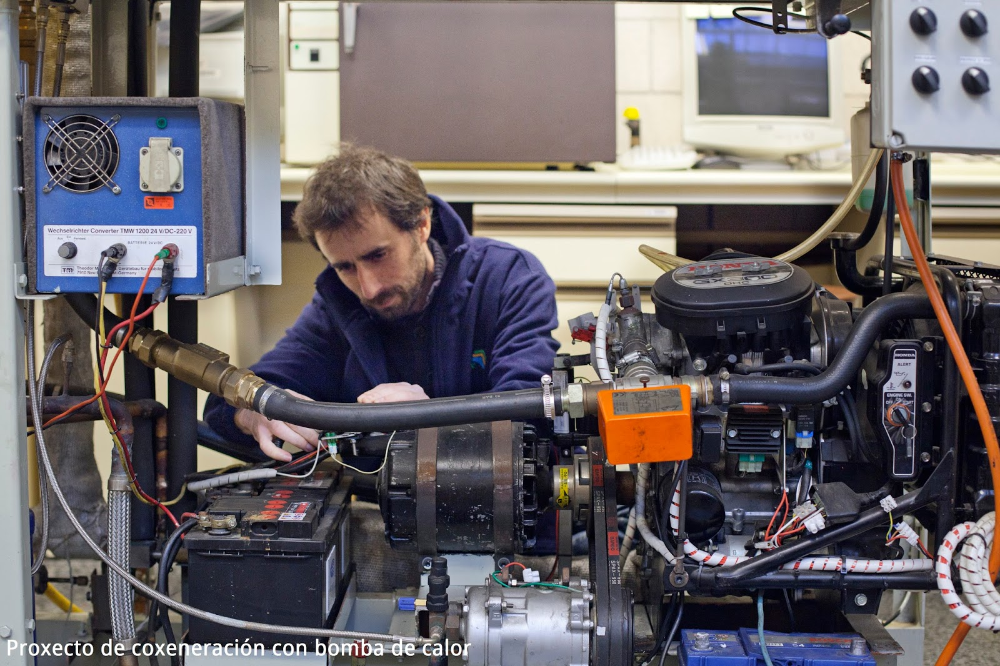
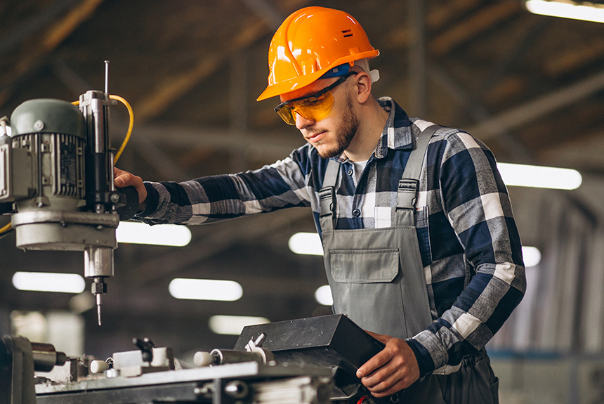
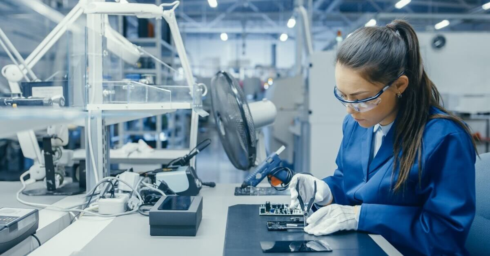

Explorando la Ingeniería Mecánica
1. Introducción a la Ingeniería Mecánica

La ingeniería mecánica es una de las ramas más antiguas y versátiles
de la ingeniería. Se centra en el diseño, análisis, fabricación y
mantenimiento de sistemas mecánicos. Desde componentes pequeños
hasta grandes estructuras industriales, los ingenieros mecánicos
trabajan en una variedad de industrias, incluyendo la automotriz,
aeroespacial y energética.
2. Áreas de Estudio y Especialidades

- Diseño Mecánico: Creación de sistemas y componentes,
como partes de automóviles o sistemas energéticos.
- Termodinámica y Fluidos: Principios de energía y
fluidos aplicados en motores y sistemas de climatización.
- Manufactura y Materiales: Métodos de producción y
desarrollo de materiales ligeros y sostenibles.
- Robótica y Automatización: Integración de mecánica
y electrónica en la creación de robots y maquinaria automatizada.
3. Herramientas y Software Común en Ingeniería Mecánica

Los ingenieros mecánicos utilizan herramientas como CAD
(AutoCAD, SolidWorks) para diseño en 3D, CAE (ANSYS,
MATLAB) para simulación, y impresión 3D
para crear prototipos complejos.
4. Campos de Aplicación en la Vida Cotidiana

- Industria Automotriz: Desarrollo de vehículos más
seguros y eficientes.
- Energía Renovable: Diseño de turbinas eólicas y paneles
solares.
- Sector Aeroespacial: Ingeniería de motores y sistemas
de control de vuelo.
- Robótica y Automatización: Robots industriales para
procesos de manufactura.
5. Perspectivas Futuras y Avances Tecnológicos
La ingeniería mecánica avanza hacia la energía sostenible,
la inteligencia artificial aplicada a la ingeniería
y el desarrollo de nuevos materiales ligeros y resistentes,
como los compuestos de fibra de carbono, que están transformando la manufactura
y otras industrias.
6. Recursos para Aspirantes a Ingenieros Mecánicos

Para saber más, puedes consultar edX y
Coursera para cursos especializados en
diseño CAD, simulación y termodinámica.